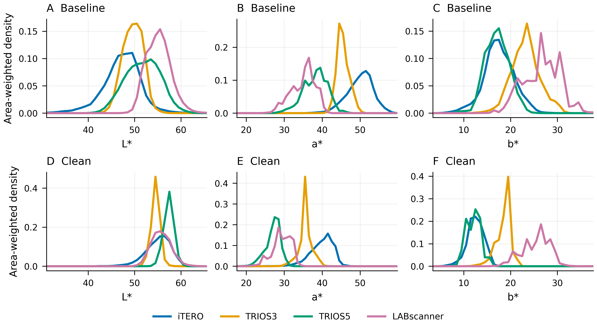
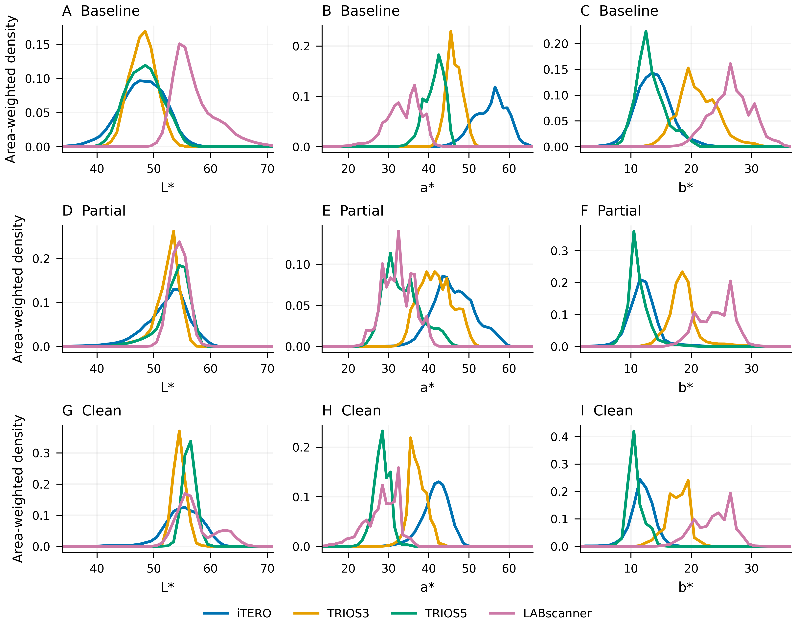
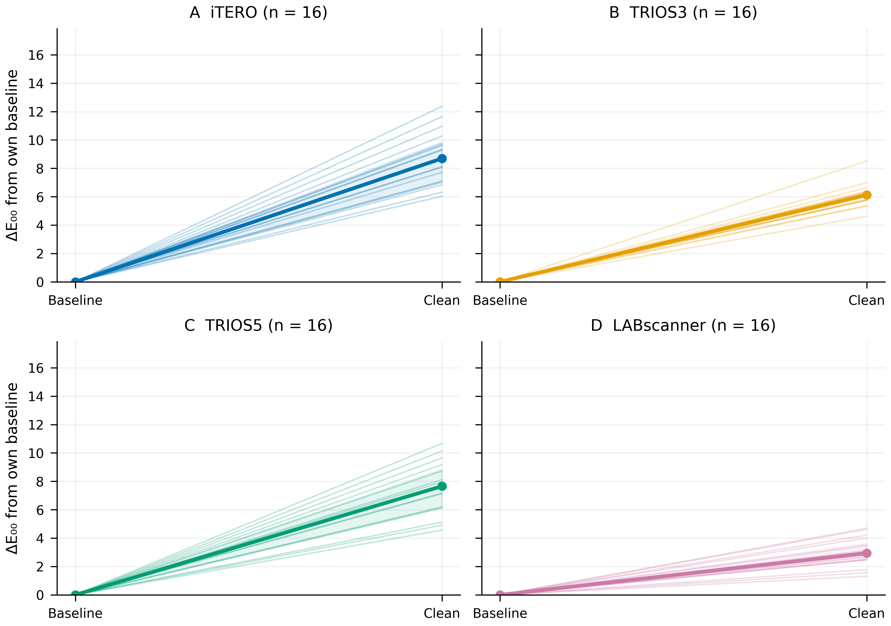
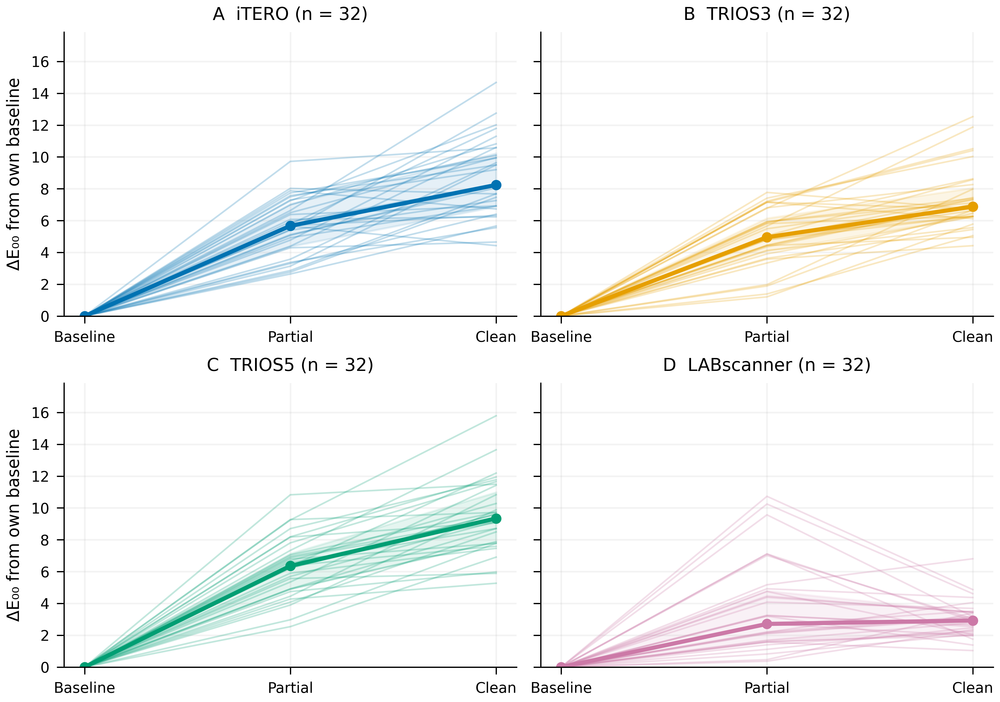
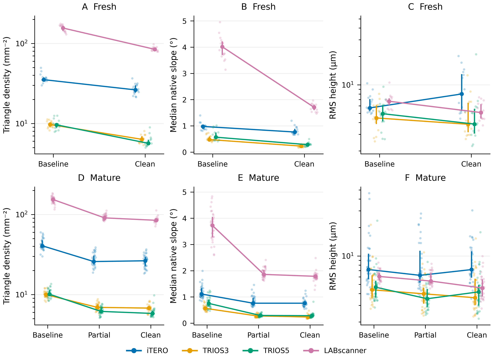
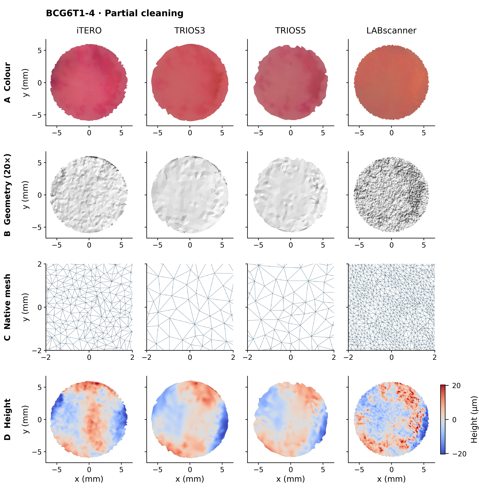
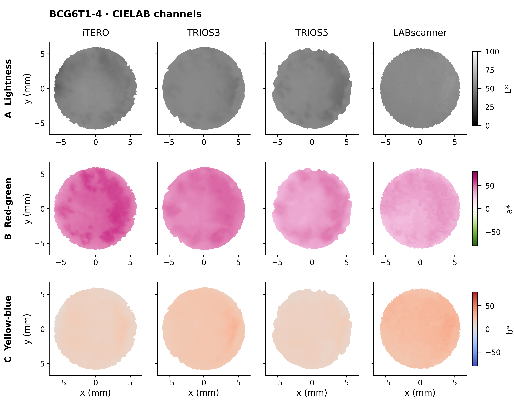
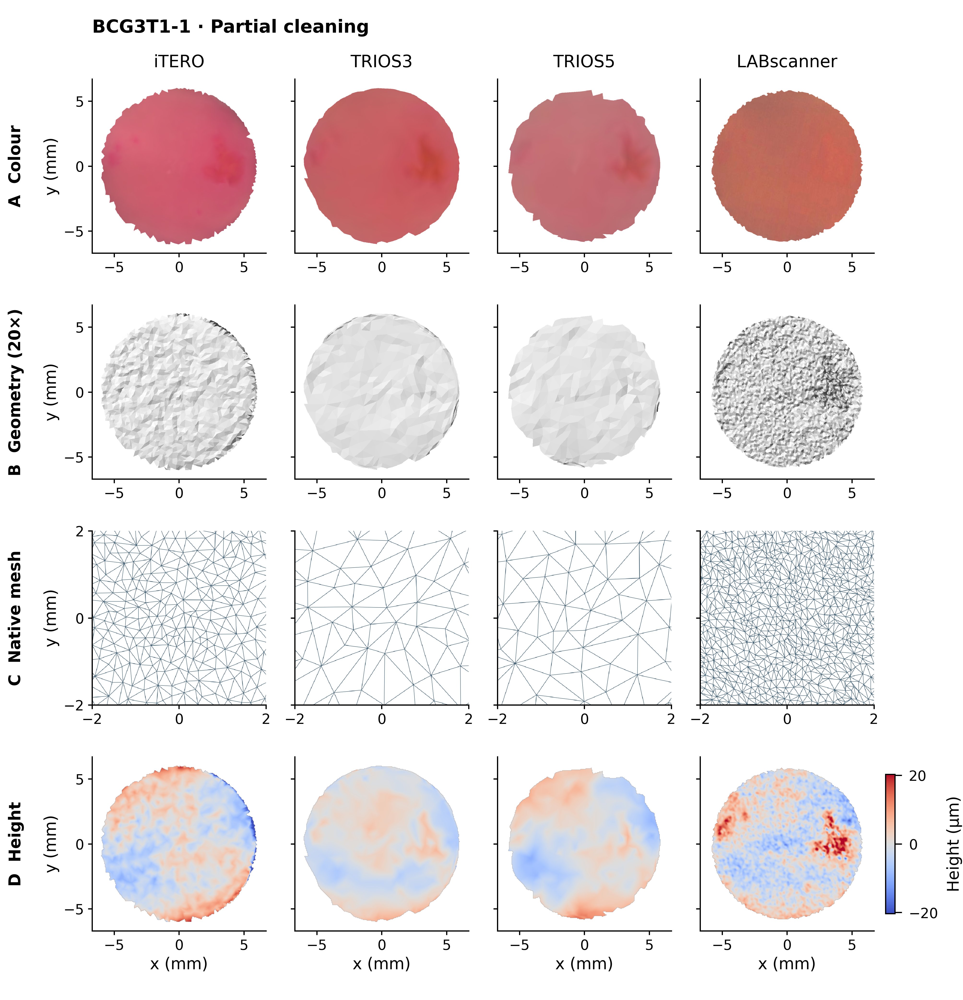
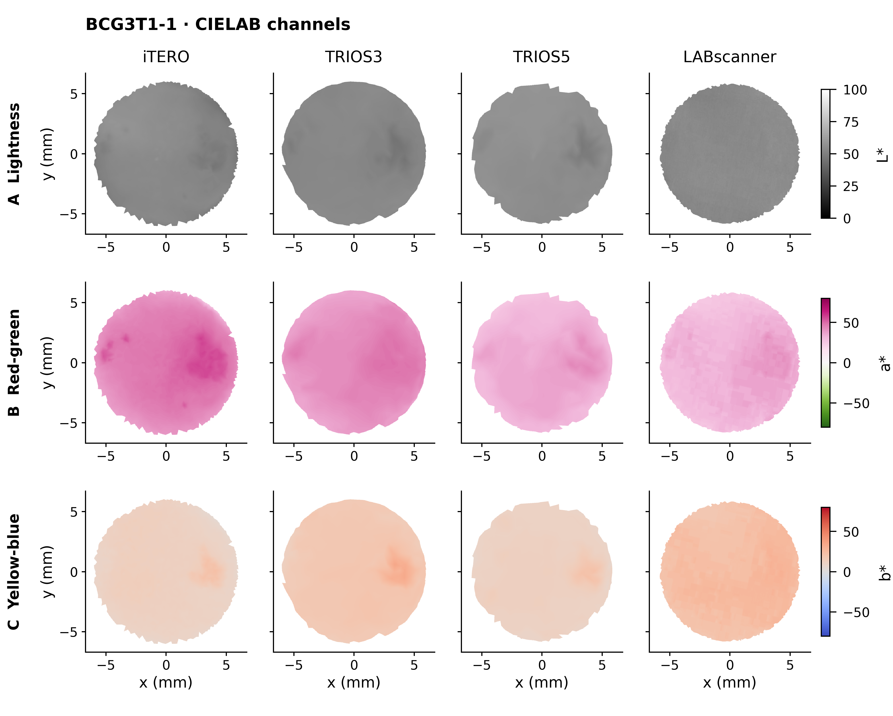

Within each scan, colour histograms are weighted by visible 3D surface area and normalised. Curves average scan histograms with one equal contribution per specimen. Assumed sRGB/D65/2°; these describe exported appearance. Background pixels are excluded. Fresh specimens are shown with stages in rows and L*, a* and b* in columns.

Within each scan, colour histograms are weighted by visible 3D surface area and normalised. Curves average scan histograms with one equal contribution per specimen. Assumed sRGB/D65/2°; these describe exported appearance. Background pixels are excluded. Mature specimens are shown with stages in rows and L*, a* and b* in columns.

Thin lines follow individual physical specimens within each scanner. Thick lines show medians and shading shows the interquartile range at each stage. ΔE₀₀ compares area-weighted scan-mean CIELAB colours against the same specimen's baseline, whose change is zero by definition. All scanner panels and both cohorts share the same vertical limits. Fresh specimens have two stages; mature specimens have three. Stage names do not identify plaque pixels.

Thin lines follow individual physical specimens within each scanner. Thick lines show medians and shading shows the interquartile range at each stage. ΔE₀₀ compares area-weighted scan-mean CIELAB colours against the same specimen's baseline, whose change is zero by definition. All scanner panels and both cohorts share the same vertical limits. Fresh specimens have two stages; mature specimens have three. Stage names do not identify plaque pixels.

Rows show fresh (A–C) and mature (D–F) specimens. Columns show triangle density per mesh surface area, area-weighted median native face inclination relative to the best-fit plane, and plane-detrended RMS height after surface-area-weighted averaging into 100 µm cells. Dots are individual scans; connected markers show medians and bars show the specimen interquartile range. The density and RMS axes are logarithmic; the limits for each metric are shared across cohorts. Common cell width does not equalise scanner resolving power. These are unfiltered scanner-derived topography descriptors, not independently validated physical roughness or accuracy measurements.

Colour and geometric representations of BCG6T1-4 after partial cleaning. Columns show iTERO, TRIOS3, TRIOS5 and LABscanner. Rows show (A) unlit colour, (B) neutral-shaded native geometry with 20-fold vertical exaggeration, (C) native triangle edges and (D) plane-detrended height. The field of view is 13.4 × 13.4 mm except for the 4 × 4 mm mesh zoom. Height maps use 50 µm cells and a common colour range of ±20.29 µm across both examples; values outside this range are saturated. Illumination and vertical exaggeration are identical between scanners; quantitative measurements use unexaggerated coordinates. Approximate shared orientation does not establish pointwise correspondence. Plaque locations are not identified without annotations.

Spatial CIELAB distributions for BCG6T1-4 after partial cleaning. Columns show iTERO, TRIOS3, TRIOS5 and LABscanner. Rows show (A) L* lightness, (B) a* red-green and (C) b* yellow-blue channels, derived from the unlit RGB projection assuming sRGB, D65 illumination and a 2° observer. Display ranges are shared between scanners and examples: 0–100 for L* and −80 to +80 for a* and b*. Display clipping does not affect the numerical summaries. The field of view is 13.4 × 13.4 mm. Maps describe uncalibrated exported appearance.

Colour and geometric representations of BCG3T1-1 after partial cleaning. Columns show iTERO, TRIOS3, TRIOS5 and LABscanner. Rows show (A) unlit colour, (B) neutral-shaded native geometry with 20-fold vertical exaggeration, (C) native triangle edges and (D) plane-detrended height. The field of view is 13.4 × 13.4 mm except for the 4 × 4 mm mesh zoom. Height maps use 50 µm cells and a common colour range of ±20.29 µm across both examples; values outside this range are saturated. Illumination and vertical exaggeration are identical between scanners; quantitative measurements use unexaggerated coordinates. Approximate shared orientation does not establish pointwise correspondence. Plaque locations are not identified without annotations.

Spatial CIELAB distributions for BCG3T1-1 after partial cleaning. Columns show iTERO, TRIOS3, TRIOS5 and LABscanner. Rows show (A) L* lightness, (B) a* red-green and (C) b* yellow-blue channels, derived from the unlit RGB projection assuming sRGB, D65 illumination and a 2° observer. Display ranges are shared between scanners and examples: 0–100 for L* and −80 to +80 for a* and b*. Display clipping does not affect the numerical summaries. The field of view is 13.4 × 13.4 mm. Maps describe uncalibrated exported appearance.